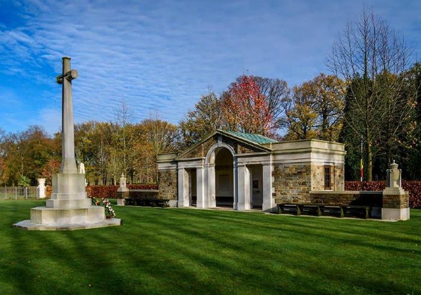

Thomas Vardre Lewis
Died: 22 October 1943
Age: 25 years old
Rank: Sergeant (Rear Gunner)
Service No.: 1337949
Regiment: Royal Air Force Volunteer
Medals: 1939-1945 Star w/ Bomber Command Clasp, War Medal 1939–1945


Thomas Vardre Lewis was born to William and Sara Ann Lewis. He later married Emma Lewis, and the couple established their home in the coastal town of Ilfracombe, Devon. As the air war intensified, Thomas volunteered for aircrew duties in the Royal Air Force Volunteer Reserve.

Schoonselhof CemeteryCWGC Commemorative Site
Upon completing his rigorous air gunnery training, Sergeant Lewis was posted to No. 51 Squadron RAF, a veteran bomber unit operating under No. 4 Group of Bomber Command stationed at RAF Snaith in East Yorkshire. The squadron was equipped with the heavy, four-engined Handley Page Halifax Mk II. Thomas took up the position of Rear Gunner, occupying one of the most perilous and isolated positions in the air war over Europe. Confined to the isolated tail turret for hours on end in freezing temperatures, the rear gunner was the crew's vital eyes in the dark, tasked with defending the aircraft against lethal German night fighters.
On the evening of Friday, 22 October 1943, Sergeant Lewis and his six crew mates took off from RAF Snaith aboard their Halifax bomber, Serial Number JN920, with the objective of a massive night bombing operation targeting the industrial center of Kassel, Germany. While flying through heavily defended airspace over occupied Europe, the bomber was struck by German anti-aircraft fire (Flak). The aircraft suffered catastrophic damage and crashed near the neighbouring villages of Retie and Kasterlee in Belgium, killing all seven young men on board.
In the summer of 1998, the Wings Museum investigated the incident and excavated the boggy crash site, recovering components including a propeller hub, Merlin engine parts, an escape axe, an under-carriage leg, and a bomb container label. The museum traced surviving family members, and on 23 October 1999, a permanent memorial was unveiled at the crash site in Kaster. The dedication service was attended by relatives of the crew, including the family of Sgt. Lewis, who only learned of his final burial place through the museum's research. (Read more at: Wing's Museum)
Today, Sergeant Thomas Lewis lies buried alongside his fellow crew members in the Schoonselhof Cemetery in Antwerp, Belgium, meticulously registered and cared for by the Commonwealth War Graves Commission (view listing: 1337949). His name remains proudly honoured within the local history of Oakdale, keeping his memory alive for the generations that follow on the Oakdale War Memorial.